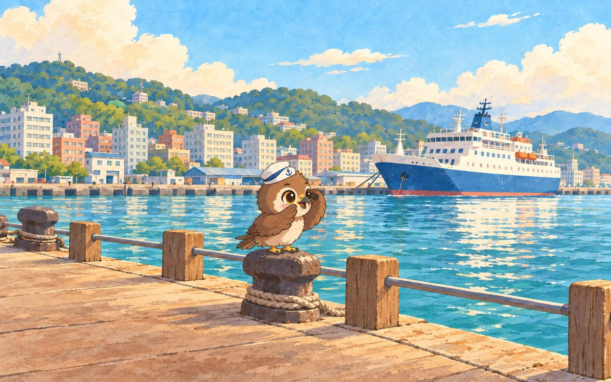
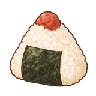
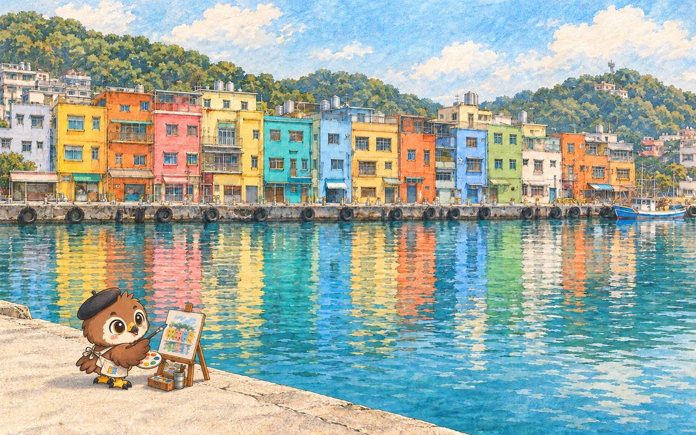
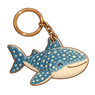
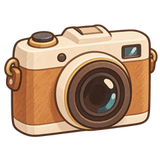

小鳶準備中
.
.
.
小鳶的小屋

0/24

0
♪
測試
⏩ 馬上回來（測試）
暫用示意，等正式圖（G-47）
‹
›

收藏冊
0 / 24

紀念品櫃
0 / 8

旅行紀錄
0 次
‹ 小屋
打包出門
便當或散步
選擇這趟的出門方式
道具可不帶
空
道具可不帶
空
便當
道具
選便當或散步，看看這趟可能去哪裡、大約幾點回來。
出發
‹ 小屋
收藏冊
‹ 小屋
紀念品櫃
小鳶從各地帶回來的小東西。點一下看小鳶說什麼。
稱號
![]()